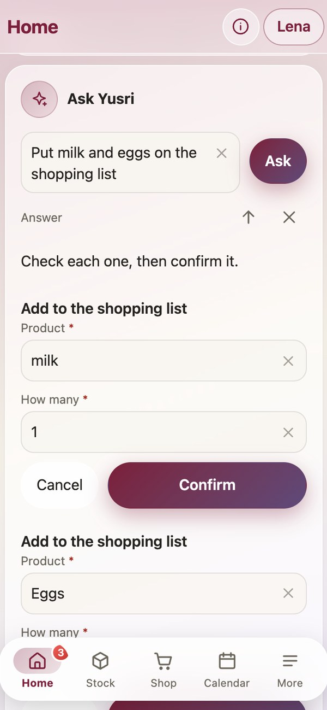
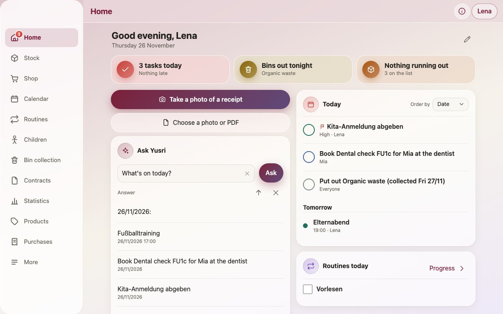
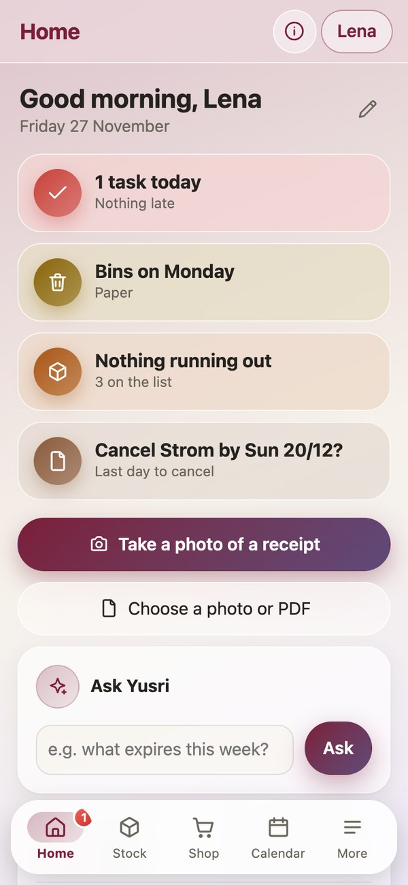

One shared view of the week
Family events and tasks, routines, children’s check-ups and bin nights, with reminders for the right person.
The small things that slip through a busy day, held together in one calm place. Yusri lives at home, ready for the people who live there.
A missed bin. An empty carton. One more thing to remember. Follow a family through a familiar kind of morning — and the quieter evening that follows.
A 53-second story about an ordinary family day and the small things that find their place.
Start the story.
Yusri brings the everyday threads into view, so the family can spend less attention managing the house and more time living in it.
See the real screensFamily events and tasks, routines, children’s check-ups and bin nights, with reminders for the right person.
Yusri reads a receipt locally, updates stock and suggests what to buy. You review every change before it is saved.
Bring price lists from shops you choose. Compare products by pack size and price per litre or kilo. Yusri fetches no prices itself.
Keep contract end dates, cancellation reminders, expiring papers and receipt warranties in view. Yusri helps organize the details; it does not give legal advice.
The ⓘ on every page explains its controls. Explore the four everyday tabs, plus routines, contracts and statistics.
A local model reads receipts and understands requests. Code checks dates and sums; you review every receipt before it is saved.
Across 20 test receipts · qwen3.5:4b
Never seen before, in English and German · qwen3.5:4b
95 of 95 waste-calendar collections
Median receipt read: 32 seconds
Measured on an M1 Pro with 16 GB memory.
Ask about today, stock, dates and spending. Ask how to use a page or set something up. Follow up naturally — “and tomorrow?” — or ask what model fits this computer and how much storage Yusri uses.

“What do I need to remember today?”
“How much storage does Yusri use?”
“Which AI model fits this computer?”
Disk use is measured live. AI settings show the model’s system-memory fit and expected receipt time.Move pages onto the tab bar, choose your settings, and see what the household system is doing.
Tick habits from Home and follow monthly progress. Add children’s check-ups from booklet photos and confirm the dates; choose who puts bins out. Track contracts and warranties, explore spend, prices, waste, routines and tasks by period, browse purchases by item or receipt, and keep product names in English and German.
Choose language, one of 17 colours, one of 145 icons, light or dark, and your PIN. Sign out this phone or others. Admins manage people, children’s access, sign-out everywhere and household preferences.
Pick a local AI model or another computer at home. Yusri tests new models on made-up receipts before suggesting a switch. See storage use, clean old backups, save a second copy, export data, set up phone access and choose optional add-ons.
The screenshots are from Yusri itself. Choose Burgundy in the app, then each phone can keep its own colour and light or dark setting.
Yusri runs on one computer at home. Open the same household in a browser on your computer, phone or tablet over home Wi‑Fi.


Yusri runs on a computer in your home. Core features work offline after setup. There is no cloud account or subscription. Remote access and push are optional and stay off until an admin chooses to enable them.